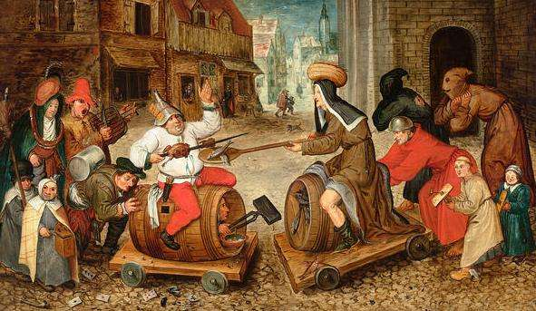

El Carnaval de Cádiz es uno de los carnavales más famosos de España y se encuentra declarado “Fiesta de Interés Turístico Internacional” desde el 29 de Febrero de 1980, junto con el Carnaval de Santa Cruz de Tenerife y el Carnaval de Águilas (Murcia).
Según la mitología griega, el Dios Momo representaba la personificación del sarcasmo, la burla y la ironía. Cuenta la historia que este Dios fue expulsado del Olimpo por burlarse de los demás dioses y eligió la ciudad de Cádiz como destino tras su destierro, transmitiendo a sus habitantes su carácter sarcástico y burlesco, el cual puede escucharse en las coplas de sus agrupaciones carnavalescas.
Según la tradición católica, el término Carnaval proviene del italiano “carne-levare”, que significa abandonar la carne, lo cual era prescripción obligatoria durante la Cuaresma, por lo que se considera el Carnaval como un período anterior a la abstinencia sexual y al ayuno que comenzaban con el Miércoles de Ceniza y finalizaban pasada la Semana Santa.
La etimología popular también indica que el Carnaval consistía en una celebración en la que se ofrecía carne al “Dios Baal” (carne a baal), una fiesta donde cualquier comportamiento era válido, tal y como ocurría en las bacanales, saturnales y lupercales griegas y romanas.
Las primeras referencias documentadas a la celebración del Carnaval de Cádiz se encuentran en la obra del historiador gaditano Agustín de Horozco, datan de finales del siglo XVI y narran como las gaditanas arrancaban las flores de las macetas para lanzárselas unas a otras a modo de mofa.
El Carnaval evolucionó con el traslado de la Casa de Contratación de Indias a Cádiz desde Sevilla en el año 1717, tomando entonces influencias renacentistas de los carnavales de las ciudades de Venecia y Génova gracias a los comerciantes italianos que se afincaron en la cuidad buscando un lugar bien comunicado marítimamente. De este modo nacieron el uso del antifaz, la careta, las serpentinas y los papelillos (confeti), junto con los disfraces de arlequín y pierrot (personajes típicos de la “Commedia dell’Arte”) y los bailes de carnaval.
Durante el siglo XVIII fueron reiterados los intentos de desterrar el Carnaval por parte de la Iglesia Católica y en el año 1716 los bailes de máscaras fueron también prohibidos por la Corona. A pesar de todo, existen testimonios que pueden confirmar que el desacato de las órdenes era bastante notable.
A lo largo de los siglos XIX y XX el Carnaval se encontró influenciado por los distintos gobernantes del país, con sus correspondientes prohibiciones y restricciones, pero en el año 1862 el Alcalde de Cádiz, Juan Valverde y Cubells, ordenó que los gastos derivados del Carnaval fueran incluidos dentro de los Presupuestos Municipales, siendo éste el primer año en el que el Ayuntamiento se encargó de la organización y reglamentación de actos, bailes, fuegos de artificios, música, etc., considerándose así como una fiesta municipal.
En el año 1884 el Alcalde Eduardo Genovés obligó a todas las agrupaciones que quisiesen participar en el Carnaval a someterse a la censura de su repertorio, por lo cual debían contar con una licencia municipal que se conseguía mediante la presentación de su repertorio en las dependencias municipales, donde se revisaba que sus letras no atentasen contra la moral pública. Una copia sellada era devuelta a la agrupación, la cual debía ser exhibida ante cualquier autoridad que la requiriese.
El Carnaval en todas las poblaciones españolas fue abolido por Decreto del General Francisco Franco en el año 1937 debido a su carácter festivo y poco religioso, aunque en la ciudad de Cádiz permaneció latente en el sentir de sus habitantes, celebrándose reuniones clandestinas durante el mes de febrero en las tiendas de vino y los colmados para rememorar y cantar coplas antiguas.
En 1948, y tras la explosión del Depósito de Minas de San Severiano del año anterior, el Gobernador Civil, Carlos María Rodríguez de Valcárcel, autorizó a los coros y chirigotas salir a la calle, sometiéndose a la censura de la Delegación de Educación Popular y el control del Alcalde. Fue de este modo como surgieron en el año 1950 las “Fiestas Típicas Gaditanas”, declaradas como Fiestas de Interés Turístico el 18 de mayo de 1965, donde la palabra “Carnaval” se encontraba prohibida, pero gracias a las cuales la tradición carnavalesca permaneció presente en las generaciones gaditanas.
Fue en el año 1977, con la llegada de la Democracia, cuando se produjo la recuperación del Carnaval con su nombre y su fecha tradicional, el cual ha llegado hasta nuestros días y reúne cada año a miles de gaditanos y visitantes en las calles de la ciudad para deleitarse con las coplas y los “tipos” (disfraces) de sus agrupaciones.